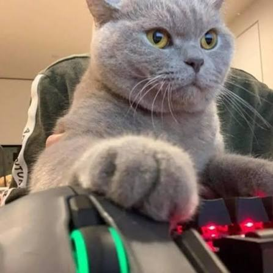

Minha Página Pessoal - Ricardo Nicolau Sousa
Apresentação
Olá, bom dia, ou tarde, ou noite. Meu nome é Ricardo Nicolau, sou um desenvolvedor em formação e estudo na Unicsul. Abaixo falarei mais sobre meus projetos, objetivos, interesses e sobre mim no geral. Espero que gostem, e podem rolar pra baixo.
Sobre mim

Nasci em Mogi das Cruzes - SP em 2007, tenho 19 anos. Sou autista, porém só descobri isso aos meus 17 anos. Sempre fui muito estudioso, atencioso, focado nos meus objetivos e nerd de tecnologia. Ganhei meu primeiro computador quando tinha 9 anos e aprendi a mexer sozinho. Desde essa época eu fui jogando muito nesse computador, mas quanto mais difícil ficava, mais difícil era de encontrar informações sobre o jogo, muitas vezes por conta da barreira de linguagem. Fiz um cursinho de 6 meses no Yázigi de Inglês, não aprendi muito, mas foi o pontapé inicial para eu aprender o resto da linguagem por conta. Minha curiosidade por aprender e vontade de adquirir mais conhecimento foi a culpa disso, e acabou que o inglês só aumentou essa curiosidade. Ele abriu portas para expandir todos os meus interesses, incluindo desenvolvimento de jogos, programação, livros, música e matemática.
Fora do mundo da tecnologia e mais sobre meus interesses. Sempre gostei muito de matemática. Ajudei muitas pessoas na escola a aprender essa matéria pois gosto muito de ensinar. Amo exatas no geral por causa de sua essência de ser exato. É um mundo abstrato feito para desenvolver a sua lógica de inúmeras formas. Gosto muito de música e de entender sua estrutura, padrões e seu significado artístico. Comecei na música tocando teclado, porém acabei no violino e com certeza não saio mais (é um instrumento pra vida). Toquei a primeira vez, em um projeto social, quando tinha 15 anos e não larguei mais. Ainda no mundo da arte, sou muito ligado a livros. Comecei lendo Harry potter, mas meus livros preferidos são A dor fantasma, de Rafael Gallo e O colibri, de Sandro Veronesi. O primeiro é sobre um pianista que perde a mão, e o segundo é sobre a arte de ficar parado enquanto a vida passa sobre seus pés. Amo a arte como um todo.

Por fim, minha trajetória com o curso de programação começou no ensino médio. Integrei a ele um curso técnico de informática no Senac. Não gostei muito do ensino de lá, então mudei para o ETIP, mas não gostei também. Acabei em um colégio aqui perto de casa, mas adivinha, não gostei também. Percebi que ninguém iria me ensinar tão bem quanto eu consigo me ensinar. Comecei a estudar por conta pois precisava de conhecimento para fazer o meu website de TCC do curso. Não ficou tão bom, mas aprendi muito com esse projeto. Ele era um projeto de ensino, um fórum, para aprender em conjunto e com o auxílio de IAs. O realizei completamente sozinho. Utilizei um website de modelo e o estilizei e programei da minha forma. Porém não foi suficiente. Não ficou tão bom, não consegui integrar tudo que queria, deixar bonito como queria. Percebi nesse projeto que não dá pra trabalhar completamente sozinho nesse mundo da programação. Eu estava em um grupo de 7 e só eu programei. Não foi só erro deles de não terem feito alguma coisa, também foi meu de não ter deixado as coisas não serem do meu jeito. Por fim, o projeto não ficou bom, passei no curso mesmo assim. Cabia no escopo proposto ao projeto, fui aplaudido quando apresentei, mas eu sabia, todo mundo também, que dava pra ficar muito melhor. Penso nisso muitas vezes por todas as semanas que seguiram. Continuo estudando e trabalhando nas minhas habilidades de trabalho em equipe na faculdade. Acredito que melhorei bastente, felizmente. Agora estou aqui.
Meus interesses
- Música e violino
- Jogos
- Livros
- Programação
- Academia
- Ver mais fotos engraçadas
Meus objetivos
- Estudar, um pouco, todos os dias
- Conseguir meu primeiro estágio
- Treinar 5 vezes por semana
- Morar sozinho
Meus projetos e estudos
| 2023 | 2024 | 2025 | 2026 |
|---|---|---|---|
| Básico de lógica de programação | Início em HTML, CSS e JS | Python | C |
| Básico de Linux | Visual Basic | SQL | Refinamento de HTML, CSS e JS |
| Básico de Excel | Básico de Photoshop | PHP | Refinamento SQL |
| -- | Meu primeiro projeto, CyberGuard | Meu segundo projeto, Mentorium | Início dos estudos sobre IA |
| -- | -- | -- | Refinamento de Python |
| -- | -- | -- | Certificado de Responsive Design |